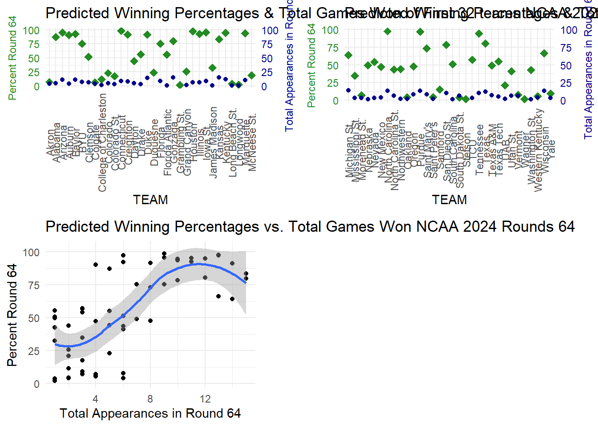
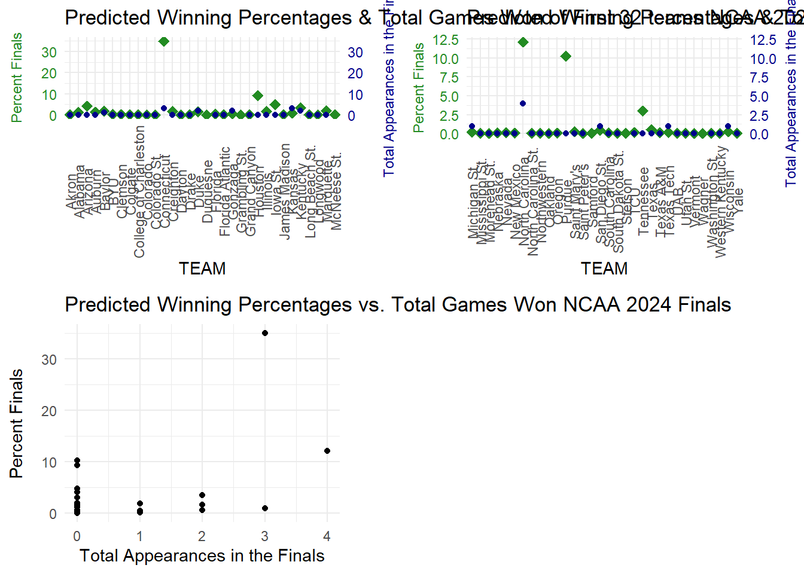
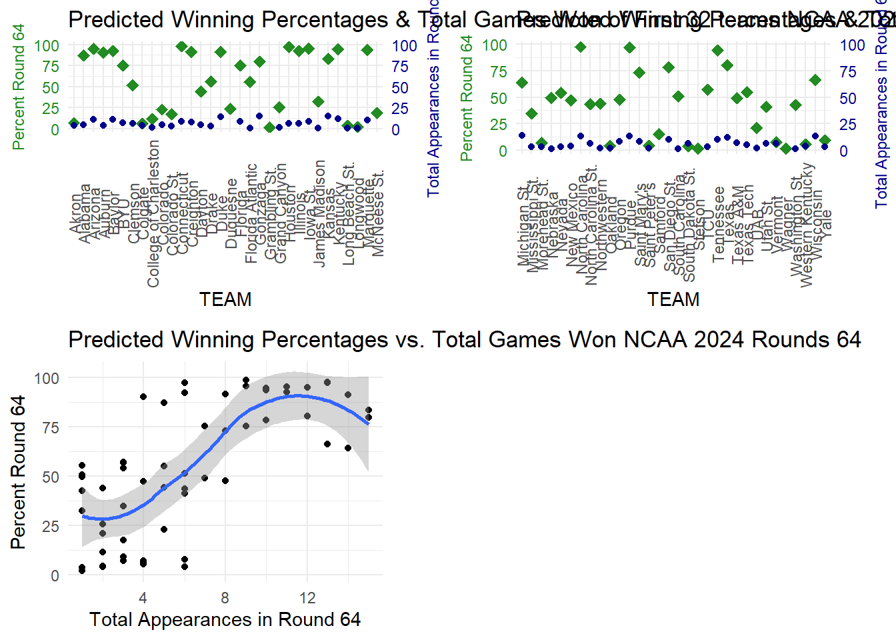
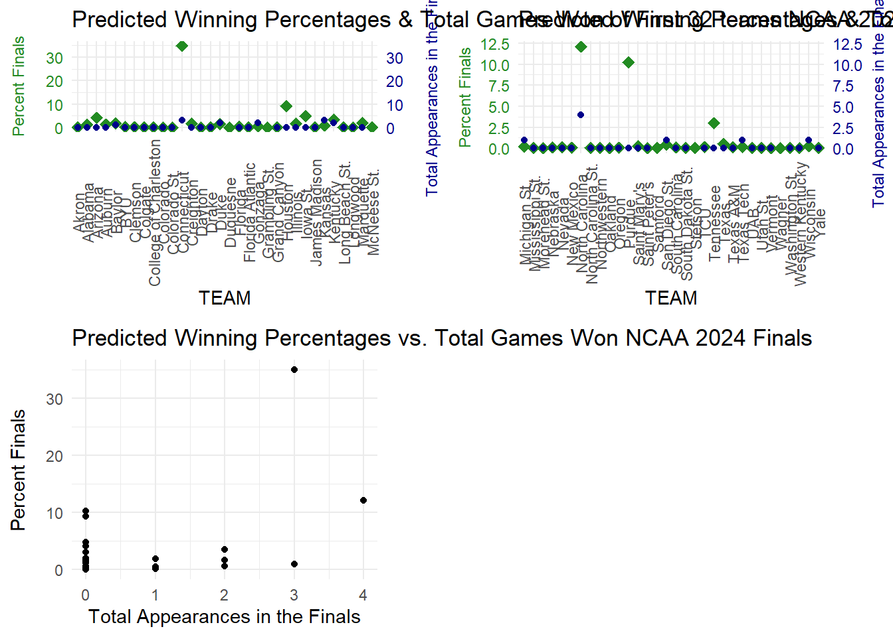
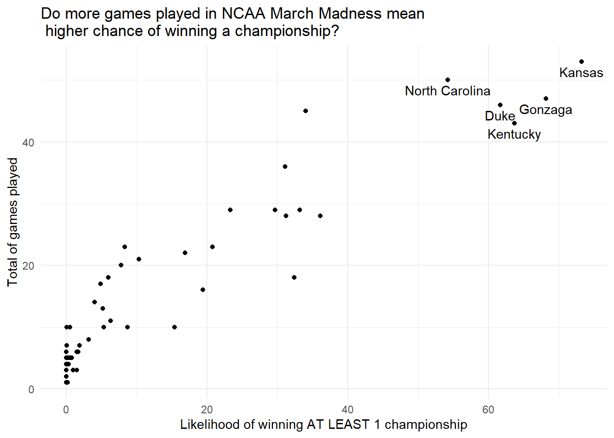
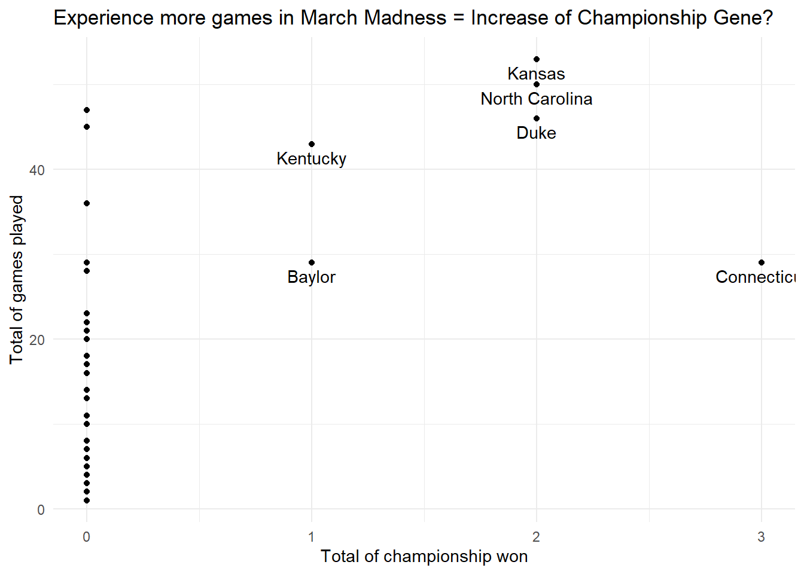

The data is from 2008 - 2024 for the men’s teams. The year 2020 is not included because the tournament was canceled due to Covid. The first column of almost every dataset displays the year the data is from.


The NCAA March Madness is a single-elimination tournament of 64 D1 basketball teams that compete in seven rounds for the national championship. Every year, ESPN and other sport broadcast websites will create an online platform where basketball audiences can submit their “dream” brackets in which they guess which team will advance into the next round and win the biggest award. With the data in hand, I am curious to look at if people consider one team’s historical winning record to make their guesses on how many percentages that team will survive after each round. Two rounds that I decided to look closer at is Round 64 and the Finals. Round 64, in my opinion, is the round where we can detect the “dark horse” of the tournament. The “dark horse” is a term refers to a team that might not do well in the past but can make a big leap/run in the tournament. On the other hands, for the Finals, people tend to pick either their favorite teams or teams that had Finals experience in the past.
During Round 64, it is understandable that people always go for the safe options to keep their brackets alive. Indeed, the overall trend is teams with better performance in the past would be predicted to survive the first round. However, some peole decided to go with new faces of NCAA 2024. Steston and Grambling St made their debuts this tournament. Dusquenne also made their first return to the tournament since 1977. So do Samford, McNeese, and Wagner. Since these are some teams’ first debuts to the tournament, there wouldn’t be any information on their previous performance. However, people still believe some of the team can be the “dark horse” of the seasons, evidently predicting McNeese and Dusquenne 25% moving to the first round. Dusquenne delivered, beating BYU who was predicted 75% winning the Round 64, and survived the first round after losing to Illinois in the Round 32.
For the Finals prediction, many people went with the reigning champion: University of Connecticut. The only team that previously had multiple Finals appearances that was predicted to be in the Finals this year is University of North Carolina. However, they came up short and lost in the Elite Eight. The commonalities among Finals favorite this year are the teams didn’t necessarily have good winning records in the past and their rosters had a lot of quality freshmen. For instance, Purdue University is one of the favorites to win it all despite never making it to the Finals before. Purdue this year, has one of the most dominant D1 basketball player of all time - Zach Edey.
Looking at these two rounds, audience also takes into account of teams’ current roster to make their prediction, not solely based theirs on teams’s historical records. However, it makes complete sense that people would favor their home team or team that historically took home the trophy.


Experts from PASE and PAKE believe that the more experiences a team have in the tournaments, the more likely for that team to win a championship. The first graph shows that teams such as UNC, Duke University, Gonzaga, or University of Kentucky have the highest chance of winning it all with their rigorous and frequent NCAA experiences. However, looking deeper into the relationship of total games played and total number of championship, I observe that number of games doesn’t necessarily dictate the total of championship won. Evidently, UConn, despite playing fewer games compared to UNC, Duke University, or Kansas University, won more championship. Also, Gonzago hasn’t won any championship despite a rich history in March Madness. Therefore, to fully understand the championship gene in each team, it is helpful to have access to teams’ chemistry, alum system that can help with coaching or player development, and fan base.